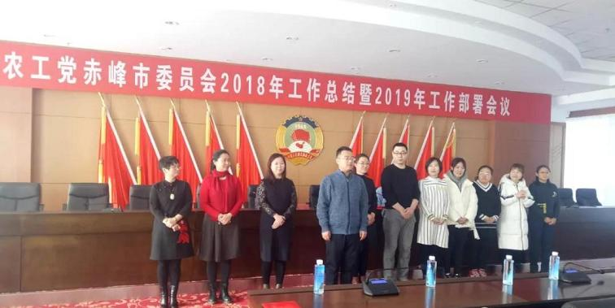

1月20日，农工党赤峰市委召开2018年工作总结暨2019年工作部署会议，总结2018年工作，研究2019年工作，表彰在社情民意信息工作、参政议政工作、组织工作、思想工作、社会服务工作等方面表现突出的先进个人，并介绍新发展党员情况。

表彰先进个人

新党员与大家见面
会议指出，2018年农工党赤峰市委各部门和基层组织深入学习领会习近平新时代中国特色社会主义思想，努力提升履职尽责能力水平，团结一致，扎实工作，奋力拼搏，在推进基层组织建设、履行参政党职能、致力脱贫攻坚和社会服务等方面都取得了一定的成绩，这些成绩的取得得益于广大农工党员的无私奉献和辛勤付出。新的一年，希望全体党员不忘初心，牢记使命，团结合作，砥砺前行，争取各方面工作都取得更好的成绩。
关于认真做好2019年重点工作，会议强调，要认真学习宣传贯彻落实中共十九大和农工党十六大精神，准确把握会议的思想精髓和核心要义，切实把思想和行动统一到上级指示和精神上来，落实到具体工作中去。要深入实施“人才强党”战略 ，坚持发展高素质党员，加大党员骨干力量的培养选拔力度，加强领导班子建设，为谱写农工党参政议政新篇章提供坚强组织保证。要以助力脱贫攻坚为主线，继续开展好健康视频录制、健康大讲堂、植树造林、扶贫义诊、捐资助学、救助残疾儿童等社会服务活动，树立农工党赤峰市委良好的社会形象。要围绕市委、市政府的中心做好参政议政工作，在脱贫攻坚、乡村振兴、生态文明建设等领域加大调研力度，为领导科学决策提供依据，为赤峰市跨越崛起贡献智慧和力量。